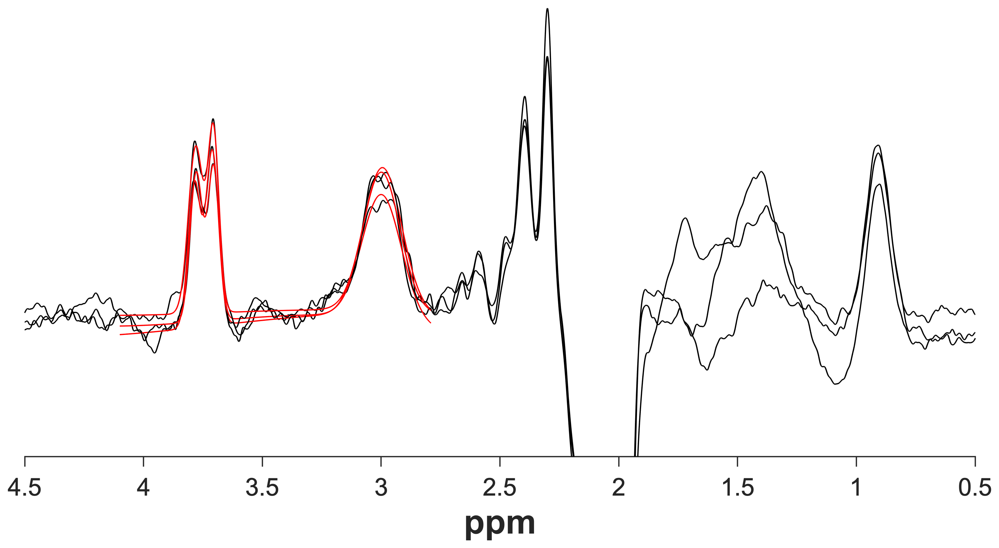
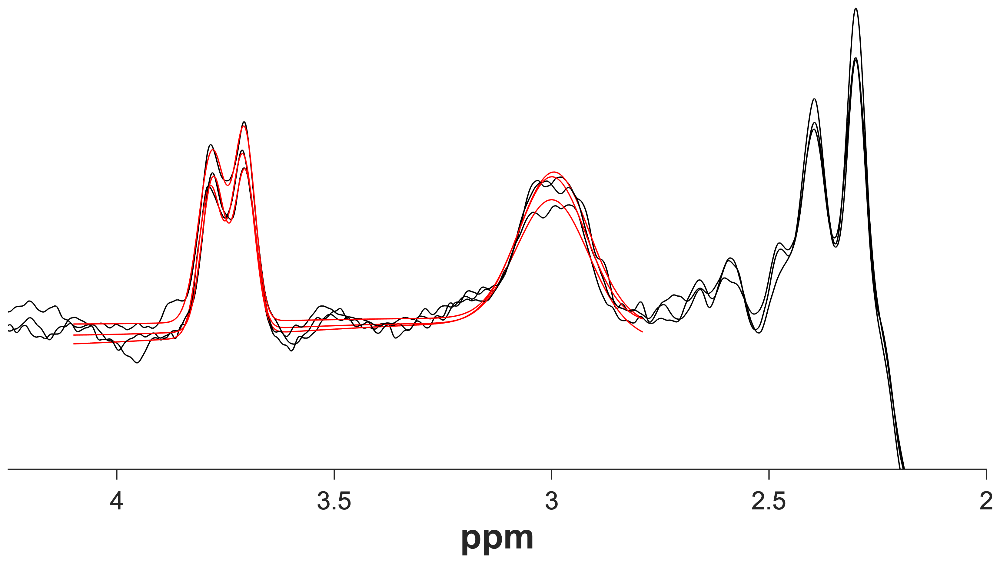

In addition to the five core modules, Gannet comes with a few
additional tools that you may find useful.
PaperPlot
PaperPlot.m will plot the difference spectra saved in
the Gannet output structure. The corresponding model fits optionally can
also be plotted. Users can choose to plot a single spectrum, a select
number of spectra, all spectra, or an average of all spectra with or
without the standard deviation. Multiple spectra will be overlaid in the
same figure. If data were acquired with HERMES, then each
Hadamard-combined difference spectrum will be plotted in a separate
subplot.
Type help PaperPlot in the MATLAB command window for
usage instructions.
To export plots at publication quality, consider using
PaperPlot.m with Yair Altman’s excellent
export_fig
MATLAB toolbox. This toolbox is bundled with Gannet.
PaperPlot(MRS,'plotModel',true);% Overlay fit models

PaperPlot(MRS,'plotModel',true,'freqLim', [24.25]);% Overlay fit models and% set ppm limits to 2-4.25

De-identification
MRI examinations involving human volunteers routinely store sensitive
protected health information (PHI) and personally identifiable
information (PII) in the exported data files. It is of vital importance
to protect volunteers’ privacy. To comply with privacy legislation, you
need to ensure that the data you handle, process, and share is
appropriately and thoroughly de-identified, i.e., stripped of all
PHI/PII that allows the data to be linked to an individual. This is
particularly critical if you intend to share data outside your
institution.
Gannet includes several functions to remove PHI/PII from the most
commonly used file formats. Currently, we offer functions to remove
PHI/PII from GE P-files (*.7), Siemens TWIX (*.dat), Philips
(*.sdat/*.spar), and generic DICOM (*.dcm) files. We plan to add support
for other formats in the future.
Please
contact
us if you require a de-identification tool for a different
format.
Please note the following:
Gannet does not remove PHI/PII from filenames; this is solely your
responsibility.
In addition to any PHI/PII in the header of structural image files, they
need to be defaced as well. Please use a skull-stripping tool (such as
the one implemented in FSL) or a defacing tool (e.g.,
pydeface).
Per our
software
license, the Gannet developers are not liable for any failure of
our de-identification routines to remove PHI/PII from your data.
How to de-identify your files
The Gannet de-identification functions create de-identified copies of
the original data. The original files are not overwritten.
GE P-files, Siemens TWIX, and Philips SDAT
For GE P-files (*.7), Siemens TWIX (*.dat), and Philips
(*.sdat/*.spar) files, the Gannet functions GEDeIdentify.m,
TWIXDeIdentify.m, and PhilipsDeIdentify.m
create de-identified copies of the respective files, appended with
_noID. All three functions can either be run by themselves
(without any input arguments) to de-identify all relevant files within
the current directory or given a cell array of filenames that you want
to de-identify.
DICOM
Generic DICOM data usually feature many separate *.dcm files for each
acquisition. DICOMDeIdentify.m requires a top-level
directory containing subdirectories for each subject
(e.g. S01/, S02/, S03/, etc.)
that contain all DICOM files for the respective subjects. Running
DICOMDeIdentify.m from the top-level directory will create
a separate directory containing the de-identified files for each
subject, appended with _anon.
Should the regulations in your country or institution require
additional information to be removed, please
contact
us.
There is no way to retrieve PHI/PII from a de-identified file!
Make sure that you either retain a copy of the original file or that you
keep a separate record that uniquely links all necessary subject
information to the de-identified file.
CoRegStandAlone
Gannet has a standalone routine for voxel co-registration and
segmentation that can be utilized with any single-voxel MRS dataset,
including non-edited data. CoRegStandAlone.m contains
simplified versions of GannetLoad.m,
GannetCoRegister.m, and GannetSegment.m to
parse geometrical information about voxel dimensions, positions, and
rotations.
CoRegStandAlone.m supports the same input formats as the
main Gannet modules. Upon being called, it produces GannetCoRegister and
GannetSegment outputs for each provided dataset. However, the
GannetSegment output does not contain any quantitative information,
except for tissue composition (voxel tissue fractions of GM, WM, and
CSF).
The syntax is similar to GannetLoad.m syntax, where the
first cell array contains the MRS filenames and the second cell array
contains the respective NIfTI filenames:
Please note that the number of NIfTI files needs to match the number
of MRS data files; i.e., if you want to register N voxels to
the same structural image, you’ll need to replicate the name of the
NIfTI file N times.